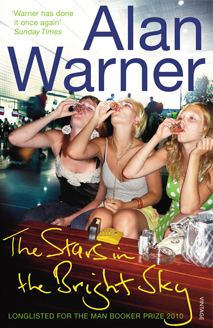

The Stars In The Bright Sky

THE STARS IN THE BRIGHT SKY (2010)
Longlisted for the Man Booker Prize 2010
The Sopranos are back: out of school and out in the world, gathered in Gatwick to plan a super-cheap last-minute holiday reunion. Kay, Kylah, Manda, Rachel and Finn are joined by Finn's equally gorgeous friend Ava and are ready to go on the rampage - Longlisted for the 2010 Man Booker Prize
PRAISE FOR THE STARS IN THE BRIGHT SKY
- Memorably bittersweet... [with] brilliantly pitched dialogue and monologue. The final cataclysmic scene is masterly (Guardian)
- The way that this middle-aged man manages to inhabit a gang of girls with such gusto and conviction is one of the small miracles of contemporary fiction, and Warner has done it once again (The Sunday Times)
- This is a snarly group picaresque, a black comedy in which Gatwick airport is like Kafka's Castle in reverse... stifling, hilarious and indelible (Scottish Review of Books)
- Warner navigates the comic, the philosophical and the socially acute like no other writer we have (Independent)
- Vigorous and uncannily convincing... Readers would be sorry if Warner were to have finished with these characters (Daily Telegraph)